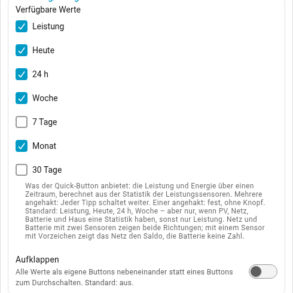
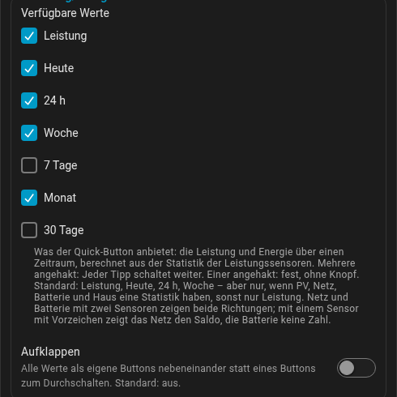

view:
energy_periods: [power, today, 24h, week, 7d, month, 30d] # beliebig vieleEnergie für einen Zeitraum
Neben der Leistung kann die Karte Energie zeigen: was heute von der Sonne kam, was diese Woche eingekauft wurde, was die Wärmepumpe diesen Monat gebraucht hat. Energie-Sensoren braucht sie dafür nicht - sie summiert die Langzeitstatistik, die Home Assistant von den schon eingetragenen Leistungssensoren führt.
Zum Ausprobieren: Die Karte startet bei Heute und % kWp. Der Schieber stellt die Uhrzeit des erfundenen Tags, und Heute zählt von Mitternacht bis dahin. Mit % kWp zeigt der PV-Ring die mittlere Leistung im Zeitraum gegen die Spitzenleistung aller Quellen, Nachtstunden eingerechnet: Am Vormittag wächst er, am Abend schrumpft er wieder, weil die Stunden ohne Sonne mitzählen. 100 % zeigt stattdessen die Anteile der Quellen, kW die Leistung im Augenblick.
|
Wichtig
|
Voraussetzung: Zustandsklasse „Messung“. Home Assistant führt eine
Langzeitstatistik nur für Sensoren mit der Zustandsklasse Die Statistik beginnt erst, wenn die Zustandsklasse gesetzt ist; nachträglich
gesetzt, fehlt alles davor. Prüfen lässt es sich unter Entwicklerwerkzeuge →
Zustände: Die Entität muss das Attribut |
Im Editor stehen die Zeiträume in der Gruppe Quick-Buttons, Teil Leistung/Energie:


Der Quick-Button Leistung/Energie neben dem Filterknopf schaltet dann reihum
kW (die Leistungsansicht, power; Watt bei power.unit: W) und die
eingeschalteten Zeiträume. Ohne Einstellung bietet er Leistung, Heute, 24 h und
Woche an (siehe Quick-Buttons):
| Schlüssel | Chip | Zeitraum |
|---|---|---|
|
Heute |
seit 0 Uhr |
|
24 h |
die letzten 24 Stunden |
|
Woche |
seit dem ersten Wochentag laut deinem Home-Assistant-Profil |
|
7 Tage |
die letzten 7 × 24 Stunden |
|
Monat |
seit dem Monatsersten |
|
30 Tage |
die letzten 30 × 24 Stunden |
Jeder Zeitraum endet bei der letzten Statistik, die Home Assistant geschrieben hat, ein paar Minuten hinter der Uhr. Die rollenden sind auf fünf Minuten genau; 30 Tage beginnen zur vollen Stunde, weil Home Assistant die Fünf-Minuten-Statistik nur rund zehn Tage aufhebt - bis zu einer Stunde kürzer, nie hochgerechnet.
- PV und Haus zeigen je einen Wert in kWh.
- Netz mit zwei Sensoren zeigt den Bezug über dem Icon (→) und die Einspeisung darunter (←), Batterie mit zwei Sensoren das Entladen oben (↑) und das Laden unten (↓) - über einen Tag passiert beides. Mit einem Sensor mit Vorzeichen siehe unten. Der Ladezustand ist ein Jetzt, kein Zeitraum, und entfällt.
- Liste und Ring arbeiten mit der Energie des Zeitraums. Schwellen in W
gelten als W × 1 Stunde:
min_consumer_w: 10blendet Verbraucher unter 10 Wh aus. - Die Punkte laufen nach der mittleren Leistung im Zeitraum - Energie geteilt durch die Zeit - mit den üblichen Schwellen; ein Monat bewegt sich wie sein Durchschnittstag, nicht mit Höchstgeschwindigkeit.
- Zusatzwerte und Zustandswörter („Bezug", „lädt") sind ausgeblendet; ihr Platz bleibt, beim Umschalten verschiebt sich nichts.
- Antippen eines Knotens öffnet weiterhin seinen Verlauf.
Ein oder zwei Sensoren für Netz und Batterie. Aus dem Stundenmittel eines
Sensors mit Vorzeichen lässt sich nicht trennen, wie viel in welche Richtung
ging - an den meisten Tagen macht das Netz beides -, exakt ist nur der Saldo.
Mit einem Sensor mit Vorzeichen zeigt das Netz deshalb einen Wert, seinen
Saldo (→ netto bezogen, ← netto eingespeist), nach dem sich auch die Punkte
richten, die Batterie keine Zahl und keinen Fluss. PV, Haus und Verbraucher
sind in jedem Fall exakt. Mit abgeleitetem Netz oder abgeleiteter Batterie
(siehe oben) geht der Energie-Modus nicht: Die Option ist im Editor gesperrt,
und der Quick-Button erscheint nicht. Für beide Richtungen braucht die Karte je
zwei Sensoren - zwei Template → Sensor-Helfer teilen einen Sensor mit
Vorzeichen auf (Einheit W, Geräteklasse power, Zustandsklasse
measurement - siehe oben):
{# Bezug #}
{{ [states('sensor.netz_leistung')|float, 0]|max if has_value('sensor.netz_leistung') else none }}
{# Einspeisung #}
{{ [-(states('sensor.netz_leistung')|float), 0]|max if has_value('sensor.netz_leistung') else none }}Bei der Batterie genauso; positiv heißt dort Entladen:
{# Entladen #}
{{ [states('sensor.batterie_leistung')|float, 0]|max if has_value('sensor.batterie_leistung') else none }}
{# Laden #}
{{ [-(states('sensor.batterie_leistung')|float), 0]|max if has_value('sensor.batterie_leistung') else none }}Meldet der Sensor andersherum (Laden positiv), die beiden Vorlagen tauschen.
none, solange der Sensor nicht verfügbar ist, hält einen Ausfall als Lücke
aus der Statistik heraus, statt ihn als gemessene Null einzutragen.
Statistik gibt es erst ab dem Anlegen eines Sensors; neue Helfer zeigen darum „Monat ab 21.10." im Chip, bis ein ganzer Monat vorbei ist.
Wie sicher ein Wert ist. Die Statistik von Home Assistant kann Löcher haben
- ein Neustart, eine Integration, die ausgefallen war. Fehlt in einer Stunde einer der Bilanzwerte (PV, Bezug, Einspeisung, Entladen, Laden, Haus), ergänzt die Karte ihn aus den anderen fünf, sonst aus derselben Stunde des Vortags (oder Folgetags). Eine Stunde ohne PV nach einer dunklen Stunde zählt als null: kleine Wechselrichter schalten nachts ab. Ein Wert wird dann danach gefärbt, wie viel vom Zeitraum ergänzt ist:
| Ergänzt | Anzeige |
|---|---|
bis 2 % |
normal |
2 – 10 % |
gedämpftes Blaugrau |
mehr als 10 % |
Bernstein |
Mit der Maus über dem Wert steht, wie viel. Hat einer der Hauptsensoren erst ab einem Datum im Zeitraum Statistik, zählt der ganze Zeitraum ab dann - der Chip zeigt „Monat ab 8.10." in Bernstein -, damit die Bilanz aufgeht. Hochgerechnet wird nie. Ein Verbraucher, der neuer ist als der Zeitraum, kürzt ihn nicht; seine Zeile und der Rest sind bernsteinfarben, und ein Verbraucher ohne Statistik (ein Sensor ohne Zustandsklasse) steht mit Strich am Ende der Liste.